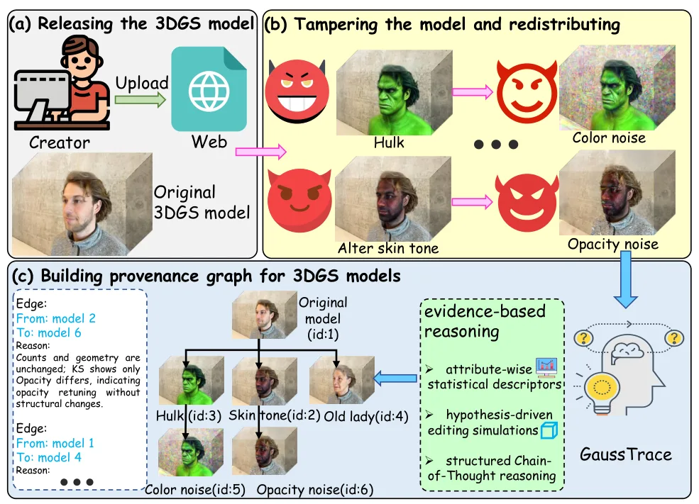
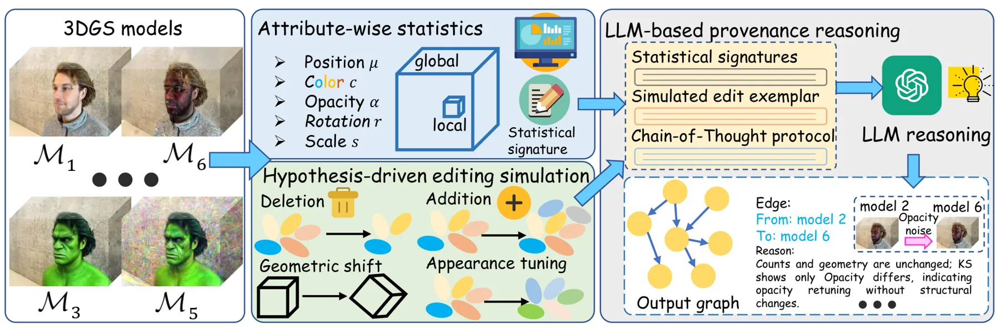
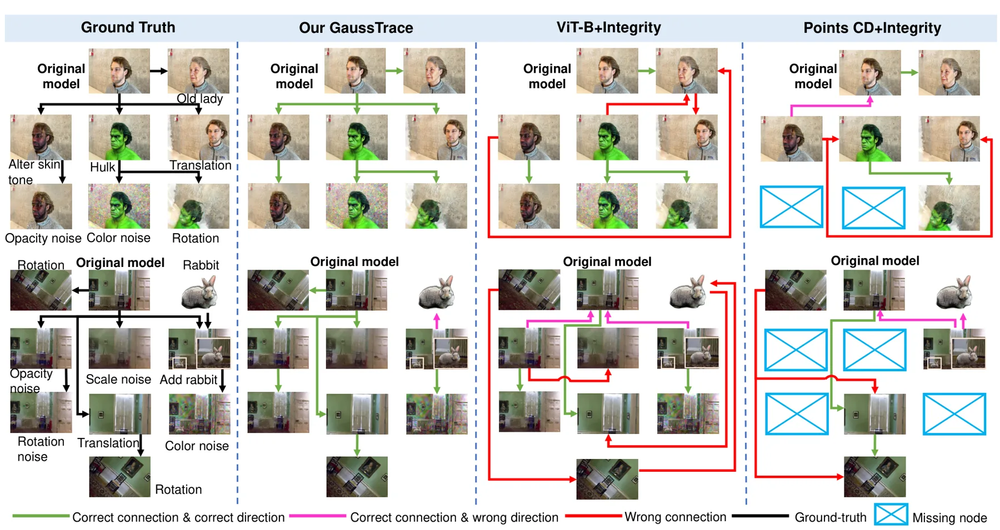
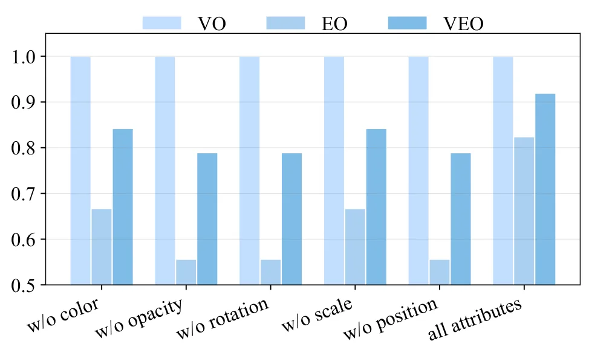
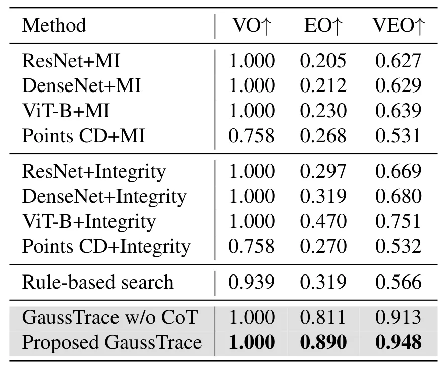
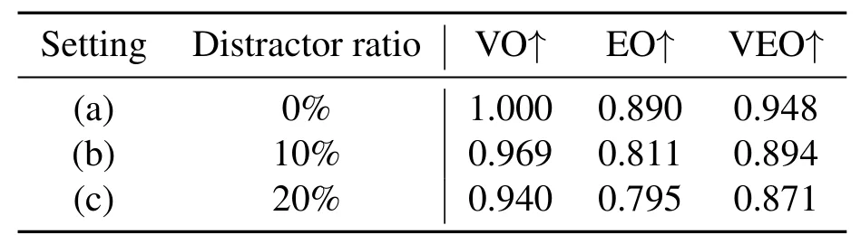

GaussTrace：基于证据和 LLM 推理的 3DGS 模型溯源分析GaussTrace: Provenance Analysis of 3D Gaussian Splatting Models with Evidence-based LLM Reasoning
偏 3DGS 资产治理和取证，离 SLAM/GNSS 主线较远；但对地图/数字孪生模型版本溯源有一定边缘价值。
一句话工作总结
GaussTrace 用 3DGS 参数统计、编辑模拟和 LLM 证据推理追踪 Gaussian 模型的演化来源。
摘要
3D Gaussian Splatting 已成为高质量 3D asset 生成技术，但 3DGS 模型在数字平台上被共享、编辑和迭代后，会带来知识产权保护和取证追踪挑战。GaussTrace 提出一个用于构建 3DGS 模型有向 provenance graph 的框架，把溯源分析表述为基于证据的推理问题。方法先对 3DGS 参数做属性级统计画像，捕捉模型内在属性；再通过假设驱动的编辑模拟生成常见操作下的辅助证据；最后让 LLM 基于这些统计与模拟线索进行结构化推理，输出方向性 provenance inference 和可解释边理由。实验表明，该方法不需要模型训练或访问编辑历史，也能构建较准确、可解释且鲁棒的演化关系图。
3D Gaussian Splatting (3DGS) is a powerful technique for creating high-fidelity 3D assets. However, the widespread sharing and iterative modification of 3DGS models across digital platforms create pressing challenges for intellectual property protection and forensic traceability. To address this, we propose GaussTrace, a novel framework for constructing directed provenance graphs for 3DGS models. GaussTrace formulates provenance analysis as an evidence-based reasoning problem. It builds upon attribute-wise statistical profiling of 3DGS parameters to capture intrinsic properties. Moreover, we introduce hypothesis-driven editing simulations of common operations to provide auxiliary evidence for plausible transformation pathways. These statistical and simulated cues jointly enable a Large Language Model (LLM) to perform structured Chain-of-Thought (CoT) reasoning, yielding directional provenance inferences and explainable edge reasons. Experimental results demonstrate that GaussTrace effectively constructs evolutionary relationships among diverse 3DGS models, delivering accurate, interpretable, and robust provenance graphs without requiring model training or access to editing histories. Project page: https://haolianghan.github.io/GaussTrace.
中文解读摘录
- 作者：Ray Zhang, Marcus Greiff, Thomas Lew, John Subosits；类别：cs.CV / cs.AI / cs.RO；发布日期：2026-06-09；备注：16 pages, 12 figures；采集 score=14
- 核心问题：局部点云配准在 LiDAR/RGB-D tracking 中通常依赖 correspondences 或 ICP 类最近邻，特征稀疏、退化或外观变化时容易漂移；RKHS/CVO 类 correspondence-free 方法更稳但一阶优化速度偏慢。
- 方法亮点：把点云表示为带 point-wise anisotropic kernels 的连续函数，核函数编码局部几何，使法向方向更强约束、切向方向更宽松；优化上提出带近似 Riemannian Hessian 的二阶流形优化。
- 结果信号：相对以往一阶 RKHS 配准 solver 最高加速约 10×；在驾驶域 LiDAR tracking 的特征稀疏场景中，平移和旋转漂移均降低超过 55%；RGB-D 与物体配准 benchmark 也显示比 ICP 类方法更稳。
- 关注价值：这是今天最接近 SLAM 前端/里程计的工作。若开源或实现成本可控，值得尝试替换/增强 frame-to-frame LiDAR odometry、RGB-D odometry 和全局初始化后的精配准模块。
图表/页面预览
{kind=link}

{kind=link}

{kind=link}

{kind=link}

{kind=link}

{kind=link}
